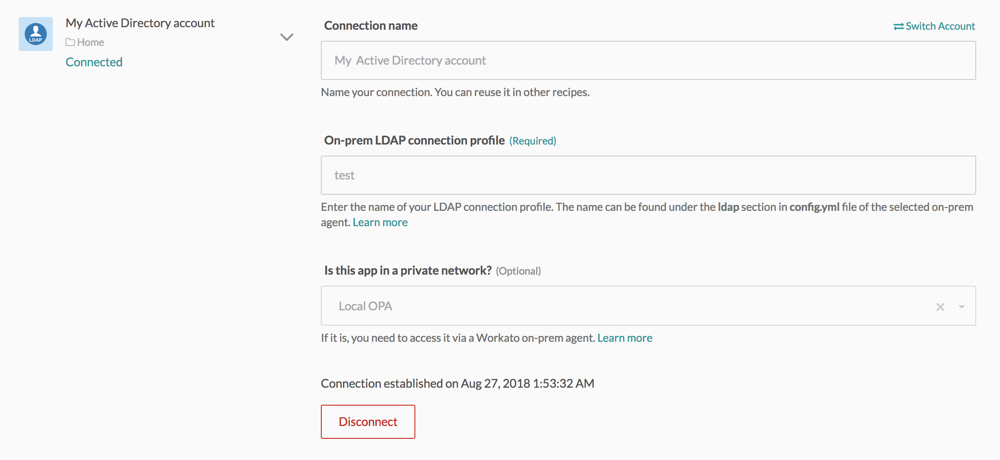

Active Directory
Active Directory is a directory service developed by Microsoft to manage access to resources in a network. The service runs on a Windows Server.
How to connect to Active Directory on Workato
The Active Directory connector authenticates with LDAP protocol, which is only available via the on-premise agent.

| Field | Description |
|---|---|
| Connection name | Give this Active Directory connection a unique name that identifies which Active Directory instance it is connected to. |
| Is this app in a private network? | Choose an on-premise agent if your database is running in a network that does not allow direct connection. Before attempting to connect, make sure you have an active on-premise agent. Refer to the On-premise agent guide for more information. |
| On-prem LDAP connection profile | Profile name defined in your config.yml file in the on-premse agent. |
Working with the Active Directory connector
Object types
The Active Directory connector works with all types of objects.
Sample entry DN
Use this field to define the object that you want to work with. The value in this input field should be an actual entry in your Active Directory instance. This entry will be used to determine the input and/or output fields of the action/trigger.
DN of a sample user entry will look like this:
CN=Workato Integrations,CN=Users,DC=workato,DC=local